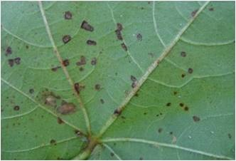
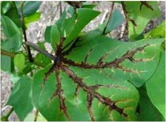

Symptom
- Water soaked, circular or irregular lesions on cotyledons which spread to petiole and stem and finally withering and death of seedling known as Seedling blight
- Small, dark green, water soaked areas develop on lower surface of leaves, enlarge gradually and become angular when restricted by veins and veinlets and spots are visible on both the surface of leaves (Angular leaf spot)
- The infection of veins and veinlets shows blackening with crinkled and twisted leaves and bacterial oozing (vein necrosis or vein blighting)
- Black lesions on stem and branches, premature drooping off of the leaves resulting in die back known as Black arm
- It also affects the bolls causing boll rot
Management
- Delint the cotton seeds with concentrated sulphuric acid at 100ml/kg of seed.
- Treat the acid delinted seeds with Carboxin or Oxycarboxin at 2 g/kg or soak the seeds in 1000 ppm Streptomycin sulphate overnight.
- Remove and destroy the infected plant debris.
- Rogue out the volunteer cotton plants and weed hosts
|
|  |
 |
| Angular leaf spot |
Vein necrosis |
 |
| Boll rot |
|